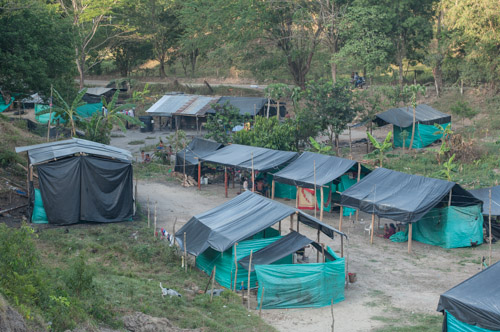
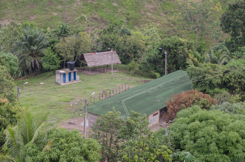

<doctype html>
    <html>
        <head>
            <meta charset="UTF-8"/>
            <meta name="viewport" content="width=device-width, initial-scale=1" />
        <title>
            Mis datos de Mapa Guaviare 
        </title>
        <!-- Leaflet -->
            <link rel="stylesheet" href="lib/leaflet/leaflet.css"/>
            <link rel="stylesheet" href="lib/leaflet/leaflet.label.css"/>
            <script src="lib/leaflet/leaflet.js"></script>
            <script src="lib/leaflet/leaflet.label.js"></script>
            <script src="lib/leaflet/Google.js"></script>
            <script src="lib/leaflet/osm.js"></script>
            <script src="http://maps.google.com/maps/api/js?v=3&sensor=false"></script>
            <script src="data/dpto_guaviare.geojson"></script>
            <script src="data/predial.geojson"></script>
            <script src="data/vias.geojson"></script>
    <style type="text/css">
        #map { height: 100%; width: 100%;}
        .legend { background: white; line-height: 1.5em}
        .legend { width: 5em; float:left }
    </style>
        </head>
        <body>
    <div id="map"></div>

    <script>
        var predialLayer;

        function getCountryColor(Área){
            if(Área >200000){
                return 'blue';
            }else if (Área >10000){
                return 'purple';
            }else{
                return 'red';
            }
        }

        function highlightFeature(e){
            var layer = e.target; 
            layer.setStyle(
                { 
                weight : 5 ,
                color : 'black',
                fillColor : 'white',
                fillOpacity : 1 
                }
            );
            if(!L.Browser.ie && !L.Browser.opera){
                layer.bringToFront();
            }
        }

        function resetHighlight(e){
            predialLayer.resetStyle(e.target);
        }

        function zoomToFeature(e){
            map.fitBounds(e.target.getBounds());
        }

        function predialOnEachFeature(feature, layer){

            
            layer.on(
                {
                    mouseover : highlightFeature,
                    mouseout : resetHighlight,
                    click: zoomToFeature
                }
            );
        }


        function predialStyle(feature){
            return {
                fillColor : getCountryColor(feature.properties.Área),
                weight : 1, 
                opacity : 1,
                color : 'white', 
                dashArray : 3, 
                fillOpacity : 0.7
            }
        }
        function viasStyle(feature){
            return {
                fillColor : 'black',
                weight : 2, 
                opacity : 0.3,
                color : 'black', 
                dashArray : 3, 
                fillOpacity : 0
            }
        }
        function guaviareStyle(feature){
            return {
                fillColor : 'white',
                weight : 2, 
                opacity : 0.99,
                color : 'green', 
                dashArray : 3, 
                fillOpacity : 0
            }
        }
        const tilesProvider = 'https://maps.wikimedia.org/osm-intl/{z}/{x}/{y}.png'

let map = L.map ('map').setView([5.96010,-74.58968],15)
 
L.tileLayer(tilesProvider,{
    maxZoom: 18,
}).addTo(map);


        var guaviareLayer = L.geoJson(
            guaviare,
            {style : guaviareStyle}
            ).addTo(map);
 
        predialLayer = L.geoJson(
            predial,
            {
                style : predialStyle,
            onEachFeature : predialOnEachFeature
            }
            ).addTo(map);
        map.fitBounds(predialLayer.getBounds());
        var viasLayer = L.geoJson(
            vias,
            {style : viasStyle}
            ).addTo(map);
        map.fitBounds(viasLayer.getBounds());
       
        var point = [5.958819,-74.593752];
        var marker =L.marker(point).addTo(map);
        var myMarker = L.marker(point);
        myMarker.addTo(map);
        myMarker.bindPopup(
            '<b>Casaloma embera katío</b> <div><image style="width: 100%"  </div>',
            {minWidth:300}
        );
        var point2 = [6.0042667,-74.3731924];
        var marker2 =L.marker(point2).addTo(map);
        var myMarker2 = L.marker(point2);
        myMarker2.addTo(map);
        myMarker2.bindPopup(
            '<b>Motordochake embera chamí</b> <div><image style="width: 100%"  </div>',
            {minWidth:300}
        );
        var point3 = [5.911639,-74.400042];
        var marker3 =L.marker(point3).addTo(map);
        var myMarker3 = L.marker(point3);
        myMarker3.addTo(map);
        myMarker3.bindPopup(
            '<b>Hacienda Bombay</b> <div><image style="width: 100%"  </div>',
            {minWidth:300}
        );
        
        var legend = L.control({position : 'bottomright'});
        legend.onAdd = function (map){
            var div = L.DomUtil.create('div','leyend');
            var labels = [
                "Resguardos con más de 200.000 ha", 
                "Resguardos con más de 10.000 ha",
                "Resguardos con igual o menos de 10.000 ha"
                ]; 
                var grades = [200001,10001,10000];
                divinnerHTML = '<div><b>Legend</b></div>';
                for(var i = 0; i < grades.length; i++){
                    div.innerHTML +='<i style="background:'
                    + getCountryColor(grades[i])+'">&nbsp;&nbsp;</i>&nbsp;&nbsp;'
                    +labels[i] + '<br />';
                }
                return div; 
        }
        legend.addTo(map);
        


        

    </script>
        </body>
    </html>
    